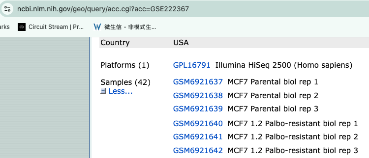
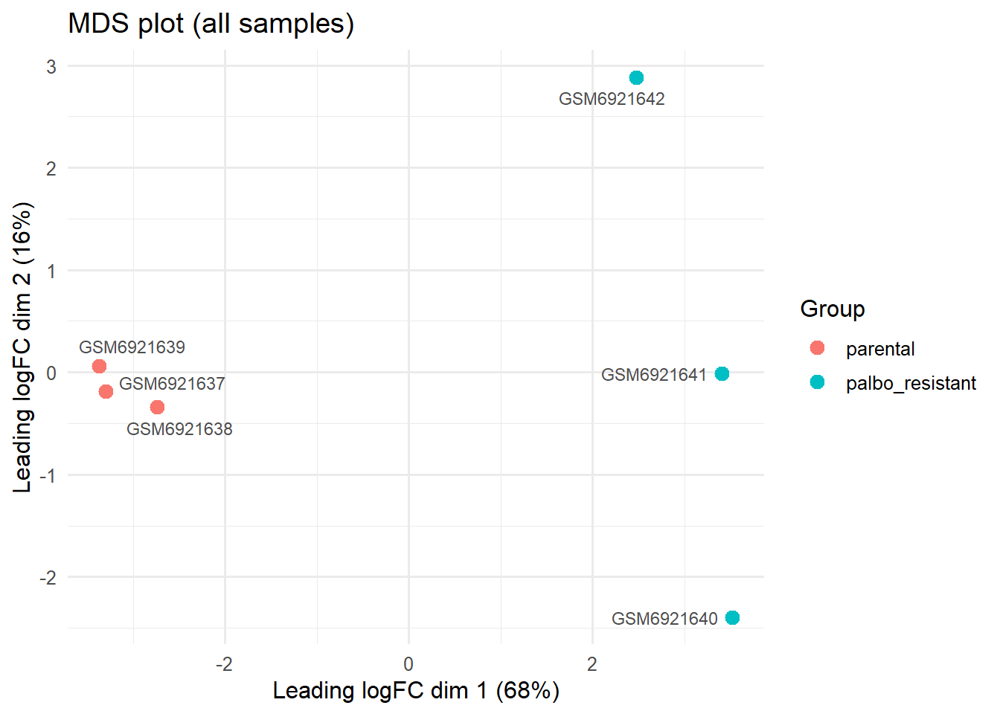
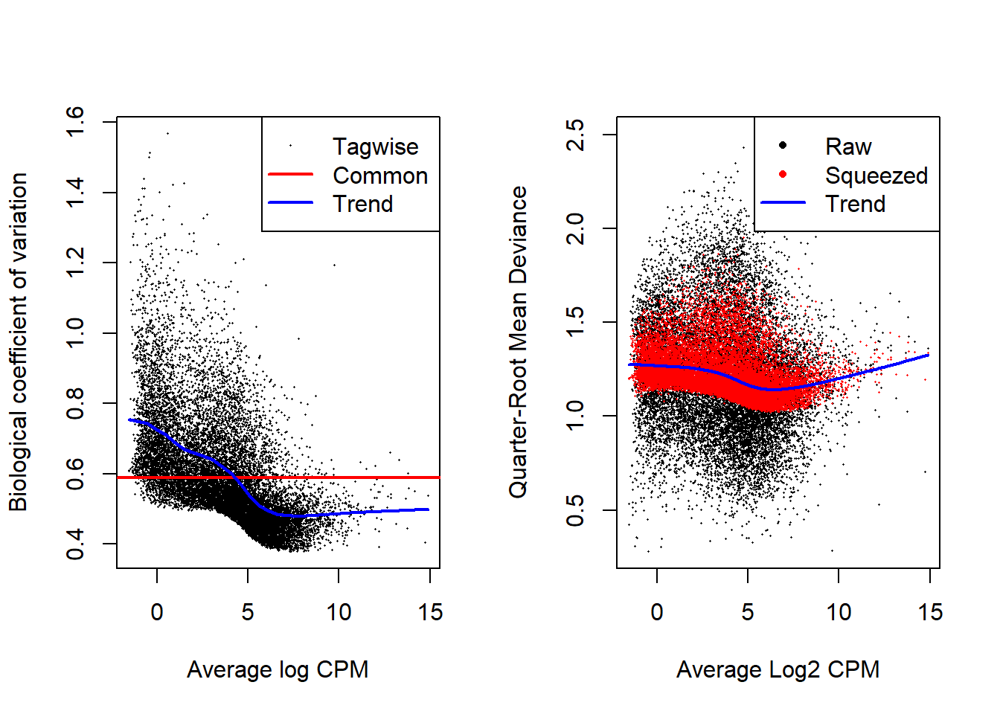
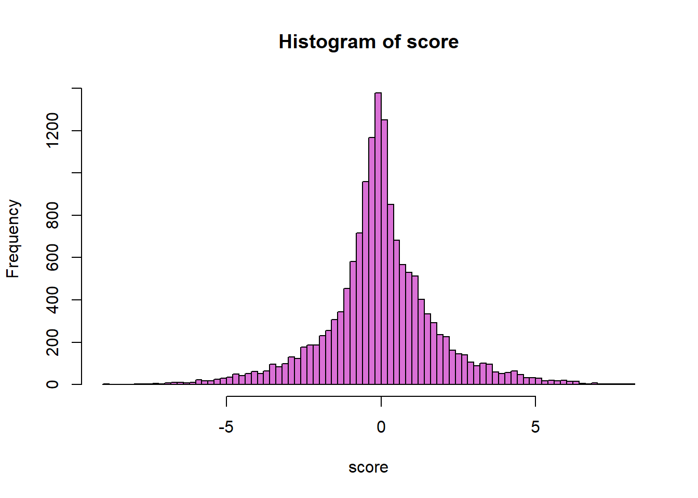
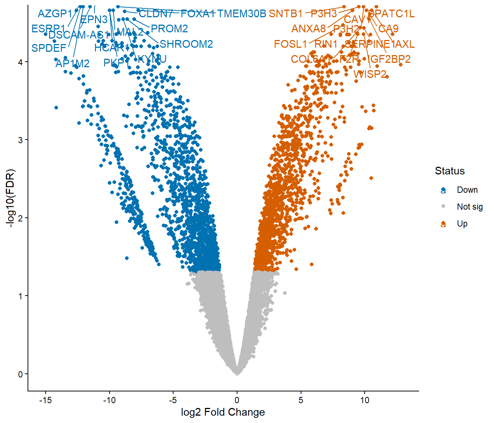

Module 8.1 Lab: Differential Expression
This work is licensed under a Creative Commons Attribution-ShareAlike 4.0 Unported License. This means that you are able to copy, share and modify the work, as long as the result is distributed under the same license.
We perform differential expression analysis using a negative binomial generalized linear model using the edgeR package.
Install and load libraries
## CRAN and Bioconductor setup
if (!requireNamespace("BiocManager", quietly = TRUE))
install.packages("BiocManager")
## List of CRAN packages
cran_packages <- c(
"tidyverse",
"ggrepel"
)
# List of Bioconductor packages
bioc_packages <- c(
"edgeR"
)
# Install CRAN packages if not already installed
for (pkg in cran_packages) {
if (!requireNamespace(pkg, quietly = TRUE)) {
install.packages(pkg)
}
}
# Install Bioconductor packages if not already installed
for (pkg in bioc_packages) {
if (!requireNamespace(pkg, quietly = TRUE)) {
BiocManager::install(pkg)
}
}
# Load the libraries
# CRAN packages
library(tidyverse)## Warning: package 'tidyverse' was built under R version 4.4.3## Warning: package 'ggplot2' was built under R version 4.4.3## Warning: package 'tibble' was built under R version 4.4.3## Warning: package 'tidyr' was built under R version 4.4.3## Warning: package 'purrr' was built under R version 4.4.3## Warning: package 'dplyr' was built under R version 4.4.3## Warning: package 'stringr' was built under R version 4.4.3## Warning: package 'forcats' was built under R version 4.4.3## Warning: package 'lubridate' was built under R version 4.4.3## ── Attaching core tidyverse packages ─────────────────
## ✔ dplyr 1.2.1 ✔ purrr 1.2.2
## ✔ forcats 1.0.1 ✔ stringr 1.6.0
## ✔ ggplot2 4.0.3 ✔ tibble 3.3.1
## ✔ lubridate 1.9.5 ✔ tidyr 1.3.2
## ── Conflicts ──────────────── tidyverse_conflicts() ──
## ✖ dplyr::filter() masks stats::filter()
## ✖ purrr::flatten() masks jsonlite::flatten()
## ✖ dplyr::lag() masks stats::lag()
## ℹ Use the conflicted package (<http://conflicted.r-lib.org/>) to force all conflicts to become errors## Warning: package 'ggrepel' was built under R version 4.4.3## Loading required package: limmaData used for this comparison
For this analysis, we are going to compare the Palbo-resistant cell lines (3 biological replicates) versus the parental cell lines (3 biological replicates)
Figure 2: GEO dataset
generate a DGE object
# 1. Find the count files
files <- list.files(path = file.path(data_dir, "data"), pattern = "\\.txt\\.gz$", full.names = TRUE)
# 2. Sample names from the file names (strip the extension)
samples <- sub("_S.*", "", basename(files))
# 3. Read the files into a DGEList
# HTSeq output has no header: column 1 = gene ID, column 2 = count.
# R reads gzipped files directly, so no need to decompress.
dge <- readDGE(files, columns = c(1, 2), header = FALSE, labels = samples)## Meta tags detected: __no_feature, __ambiguous, __too_low_aQual, __not_aligned, __alignment_not_unique# 4. Remove HTSeq summary rows (__no_feature, __ambiguous, etc.)
dge <- dge[!grepl("^__", rownames(dge)), , keep.lib.sizes = FALSE]
# 5. (Optional) add group information
dge$samples$group <- factor(
c("parental", "parental", "parental",
"palbo_resistant", "palbo_resistant", "palbo_resistant"),
levels = c("parental", "palbo_resistant") # parental = reference
)Filter low-count genes and TMM-normalize
keep <- filterByExpr(dge, group = dge$samples$group)
dge <- dge[keep, , keep.lib.sizes = FALSE]
dge <- calcNormFactors(dge, method = "TMM")
cat("Genes retained after filtering:", nrow(dge), "\n")## Genes retained after filtering: 15246group = dge$samples$group
var_pct <- round(100 * mds$var.explained[mds$dim.plot])
mds_df <- data.frame(dim1 = mds$x, dim2 = mds$y,
sample = colnames(dge), group = group)
ggplot(mds_df, aes(x = dim1, y = dim2, color = group)) +
geom_point(size = 3) +
ggrepel::geom_text_repel(aes(label = sample), size = 3, color = "grey30",
show.legend = FALSE, max.overlaps = Inf,
box.padding = 0.4, segment.color = "grey60") +
labs(title = "MDS plot (all samples)",
x = sprintf("Leading logFC dim %d (%d%%)", mds$dim.plot[1], var_pct[1]),
y = sprintf("Leading logFC dim %d (%d%%)", mds$dim.plot[2], var_pct[2]),
color = "Group") +
theme_minimal(base_size = 12) +
theme(legend.position = "right")
Design (~0 + group) and named contrast
design <- model.matrix(~ 0 + group, data = dge$samples)
colnames(design) <- levels(dge$samples$group) # "parental", "palbo_resistant"
contr <- makeContrasts(
resistant_vs_parental = palbo_resistant - parental, # + logFC = up in resistant
levels = design
)
head(design)## parental palbo_resistant
## GSM6921637 1 0
## GSM6921638 1 0
## GSM6921639 1 0
## GSM6921640 0 1
## GSM6921641 0 1
## GSM6921642 0 1Dispersion estimation and quasi-likelihood GLM
dge <- estimateDisp(dge, design, robust = TRUE)
fit <- glmQLFit(dge, design, robust = TRUE)
par(mfrow = c(1, 2)); plotBCV(dge); plotQLDisp(fit)
Calculating ranking score and export full results
## logFC logCPM F PValue FDR gene score
## AZGP1 -11.100279 7.258554 210.4011 1.070323e-09 9.022256e-06 AZGP1 -8.970485
## EPN3 -11.063337 6.286707 178.7611 1.183557e-09 9.022256e-06 EPN3 -8.926811
## AP1M2 -12.060874 6.763487 164.1170 5.663587e-09 1.971289e-05 AP1M2 -8.246908
## SPDEF -12.276235 6.971532 158.6998 7.115430e-09 1.971289e-05 SPDEF -8.147799
## P3H2 9.908346 4.560450 136.7839 7.326965e-09 1.971289e-05 P3H2 8.135076
## SNTB1 8.362925 3.678316 140.7203 9.261871e-09 1.971289e-05 SNTB1 8.033301##visualization
### histogram of the ranking score
hist(res$score, breaks=100, col="orchid", xlab = "score", main = "Histogram of score")
# Step 1: add -log10(FDR), and label each gene Up / Down / Not sig
res <- res %>%
mutate(
negLogFDR = -log10(FDR),
status = case_when(
FDR < 0.05 & logFC > 0 ~ "Up",
FDR < 0.05 & logFC < 0 ~ "Down",
TRUE ~ "Not sig"
)
)
# Step 2: pick the top 15 most significant genes on each side, to label
top_up <- res %>% filter(status == "Up") %>% arrange(FDR) %>% slice_head(n = 15)
top_down <- res %>% filter(status == "Down") %>% arrange(FDR) %>% slice_head(n = 15)
top_genes <- bind_rows(top_up, top_down)
# Step 3: plot
ggplot(res, aes(x = logFC, y = negLogFDR, color = status)) +
geom_point() +
scale_color_manual(values = c("Up" = "#D55E00", "Down" = "#0072B2", "Not sig" = "grey")) +
ggrepel::geom_text_repel(data = top_genes, aes(label = gene), max.overlaps = Inf) +
labs(x = "log2 Fold Change", y = "-log10(FDR)", color = "Status")+
coord_cartesian(ylim = c(0, 4.5)) +
theme_classic()
Version of packages and R
## R version 4.4.2 (2024-10-31 ucrt)
## Platform: x86_64-w64-mingw32/x64
## Running under: Windows 11 x64 (build 26200)
##
## Matrix products: default
##
##
## locale:
## [1] LC_COLLATE=English_Canada.utf8 LC_CTYPE=English_Canada.utf8
## [3] LC_MONETARY=English_Canada.utf8 LC_NUMERIC=C
## [5] LC_TIME=English_Canada.utf8
##
## time zone: America/Toronto
## tzcode source: internal
##
## attached base packages:
## [1] stats graphics grDevices utils datasets methods base
##
## other attached packages:
## [1] edgeR_4.4.2 limma_3.62.2 ggrepel_0.9.8 lubridate_1.9.5
## [5] forcats_1.0.1 stringr_1.6.0 dplyr_1.2.1 purrr_1.2.2
## [9] tidyr_1.3.2 tibble_3.3.1 ggplot2_4.0.3 tidyverse_2.0.0
## [13] htmltools_0.5.9 jsonlite_2.0.0 readr_2.2.0
##
## loaded via a namespace (and not attached):
## [1] sass_0.4.10 generics_0.1.4 stringi_1.8.7
## [4] lattice_0.22-6 hms_1.1.4 digest_0.6.39
## [7] magrittr_2.0.5 timechange_0.4.0 evaluate_1.0.5
## [10] grid_4.4.2 RColorBrewer_1.1-3 bookdown_0.46
## [13] fastmap_1.2.0 BiocManager_1.30.27 scales_1.4.0
## [16] jquerylib_0.1.4 cli_3.6.6 rlang_1.2.0
## [19] crayon_1.5.3 bit64_4.8.0 withr_3.0.2
## [22] cachem_1.1.0 yaml_2.3.12 otel_0.2.0
## [25] tools_4.4.2 parallel_4.4.2 tzdb_0.5.0
## [28] locfit_1.5-9.12 vctrs_0.7.3 R6_2.6.1
## [31] lifecycle_1.0.5 bit_4.6.0 vroom_1.7.1
## [34] pkgconfig_2.0.3 pillar_1.11.1 bslib_0.11.0
## [37] gtable_0.3.6 glue_1.8.1 Rcpp_1.1.1
## [40] statmod_1.5.1 xfun_0.57 tidyselect_1.2.1
## [43] rstudioapi_0.19.0 knitr_1.51 farver_2.1.2
## [46] labeling_0.4.3 rmarkdown_2.31 compiler_4.4.2
## [49] S7_0.2.2